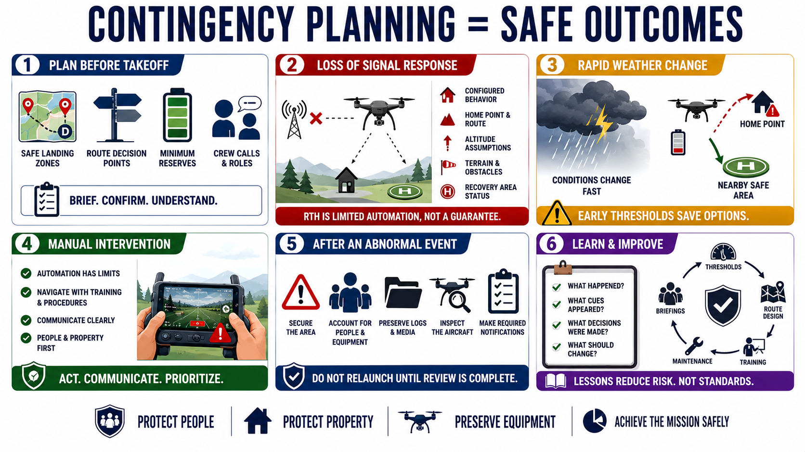

Emergency and Contingency Planning
Connecting to LMS... Progress: in progress

Narration
Contingency planning assumes weather, battery, communication, navigation, or recovery conditions may change. Identify safe landing zones, route decision points, minimum reserves, crew calls, and responsibilities before takeoff.
Loss of signal requires a site-specific response. Review configured behavior, home point, return route, altitude assumptions, terrain, wind, obstacles, and recovery-area status. Return-to-home is a limited automation, not a guarantee.
Rapid weather change may require an immediate return or landing. A strong headwind and low battery can make the planned home point less safe than a nearby approved emergency area. Preserve options through early thresholds and simple routes.
Manual intervention may be required when automation makes an unsafe assumption or navigation becomes unreliable. Operators should act within training and procedure, communicate clearly, and prioritize people and property over the aircraft or data.
After an abnormal event, secure the area, account for people and equipment, preserve logs and media, inspect the aircraft, and make required notifications. Do not relaunch until weather, equipment, authorization, and cause have been reviewed.
Document what happened, what cues appeared, what decisions were made, and what should change. Lessons should update thresholds, route design, training, maintenance, and briefings without encouraging future crews to accept more risk.